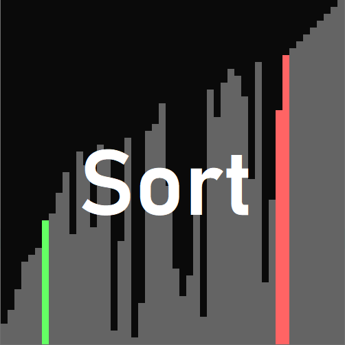

Este es un pequeño proyecto que hice en processing desde el cual se puede ver una visualización de distintos algoritmos de ordenación.

Para poder ejecutar el programa es necesario tener Processing instalado en la máquina. Desde el archivo 'Sort.pde' se puede ejecutar el programa, así como elegir qué algoritmo de ordenación es el que será usado.
Proyecto hecho usando processing
Trailer de Crunch Through Hell